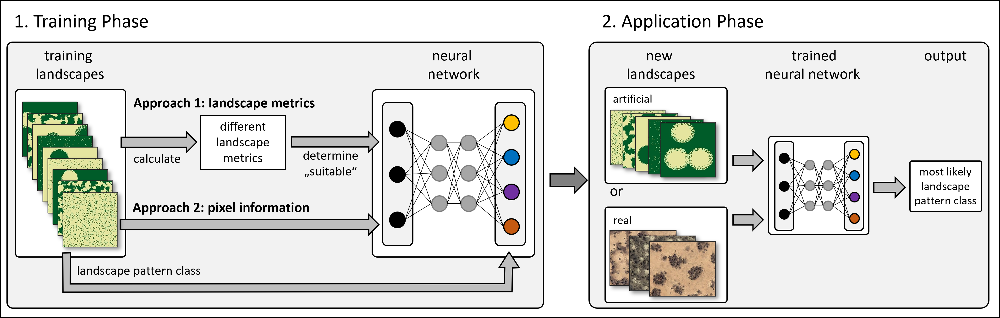

The spatPatClassifyR package provides an automated approach to classifying spatial vegetation patterns into user-defined pattern types. It does so by training a neural network on multiple reference landscapes with known pattern types. Two alternative neural network approaches are implemented: (i) a multi-layered neural network, which is trained on landscape metrics and (ii) a convolutional neural network trained on the pixel data itself. Once trained, the neural network can be applied to new landscapes with unknown spatial patterns. In doing so, it estimates the likelihood for each possible pattern type, allowing users to assess the confidence of the classification.
In the initial publication of the spatPatClassifyR package, two use cases are demonstrated: different pattern types in ecotones and different pattern types in self-organized landscapes. In both use cases we show the performance of both neural network approaches dependent on input configurations. For the self-organized landscapes, we additionally demonstrate the application of neural networks trained with artificial landscapes on real-world photographs.

Installation
You can install the development version of spatPatClassifyR from GitHub with:
# install.packages("pak")
pak::pak("ecomods/spatPatClassifyR")Get started
After successful installation, get started by following the detailed workflow description in: Get started
Citation
To cite spatPatClassifyR in publications, please use:
Tietjen et al. (2026). …
To get a BibTex entry for citing, please use citation("spatPatClassifyR").
Contributing
Please see our contributing guide for details on how to get involved.
Code of Conduct
Please note that the spatPatClassifyR project is released with a Contributor Code of Conduct. By contributing to this project, you agree to abide by its terms.